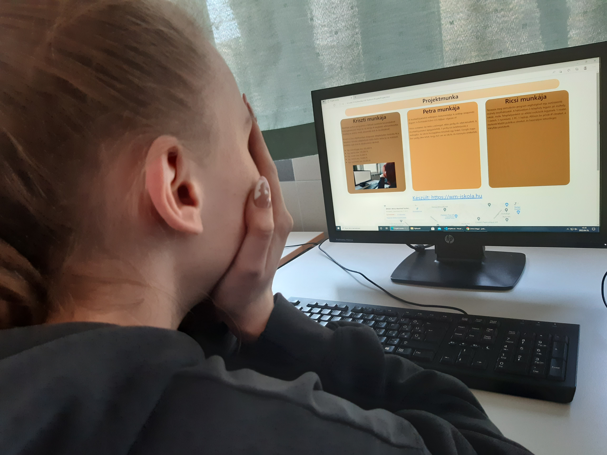
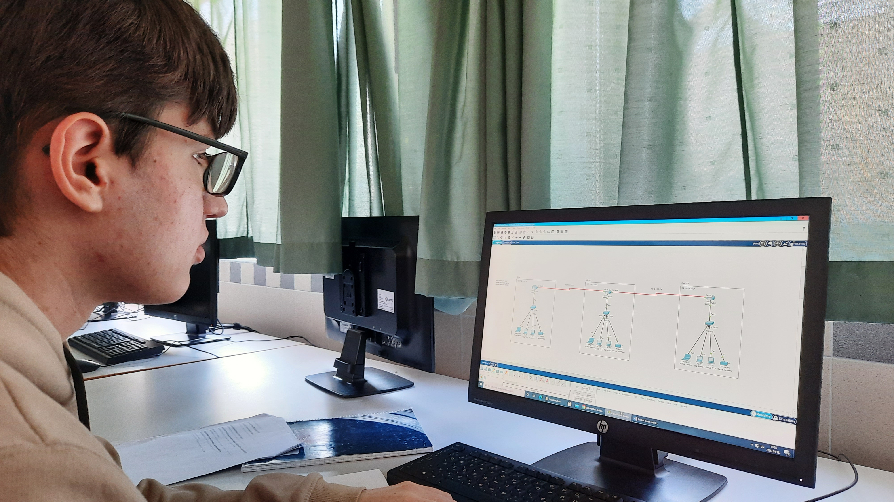

Készítsen python programot a hálózati eszközök beszerzésének költségevetésére! Kérje be, és tárolja el megfelelő adatszerkezetbe (listába) az eszköz nevét, beszerzési árát és darabszámát!
Kriszti a Class objektumban dolgozott. telephelyekre bontotta fel a feladatot. Minden telephelynek külön külön kérte be az eszközeit, amikhez saját árat és darabszámot társított.
A munkafolyamatot weblapon dokumentálja! A weblap reszponzív legyen! A formázást külső CSS fáljban végezze el!
Petra container-be tette a szöveget, ebbe pedig div-eket készített. A munkafolyamatot lejegyzetelték, ő pedig ezt belehelyezte a weblapba. Az iskola honlapjához készített egy linket. Google maps-ban pedig látni lehet, hogy hol van az iskola, és mennyire értékelték.
Tervezze meg szimulációs program segítségével egy autószerelő műhely teszthálózatát. A hálózatban 3 telephely legyen, pl. műhely, raktár, iroda. Telephelyenként az alábbi eszközök legyenek: 1 router, 1 switch, 1 nyomtató, 2 PC, 1 laptop. Állítson be privát IP címeket, a routerek között publikus címeket, és használjon tetszőleges irányítási protokollt.
Ricsi manuálisan kiosztotta az IP-címeket. Serial kapcsolatok osztott ki a Routerek között. Megadta az SSH domain-name-t az Iroda-nál. A portokhoz leírást adott, majd saját felhasználónevet és jelszót adott meg. Végül pedig EXEC engedélymegadást hajtott végre.
